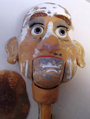
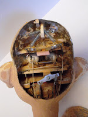

Garage Sale find
9/13/2011
{kind=link}

{kind=link}

Reader Question: "Believe it or not, I purchased this figure at a garage sale. Someone had tried to smooth the fibreglass head with what looks like spackling. I would like it to have a ball/socket neck, new brown glass self-centering eyes, gray wig, and finished as a cantankerous old lady. I contacted the builder of the figure and was advised to just buy a new one. But I like the look of this one. Would you want to tackle this monumental job?"
* * * * * *
From Mr. D: "Want to?" - No! "Be willing to?" - maybe... You're right in describing the job as "monumental". Not "impossible", but certainly difficult. To change to ball socket neck and change the eyes, I would pretty much remove all current mechanics and start over. The neck area of the body would need some work as well. And complete repainting, after making certain the areas filled are smooth and secure. One of the bigger challenges might be trying to locate an appropriate wig and make it fit. I'd guess the head is 18"-19" in circumference. Doll companies do not make "granny" wigs that large, and the "granny" wigs provided by costume companies, etc. are larger than needed. (Does anyone reading this know of a source for a child size Granny wig?)
I'd estimate $350- $400 for the full job as you describe. That is a lot of money. But still less than the cost of a new figure.